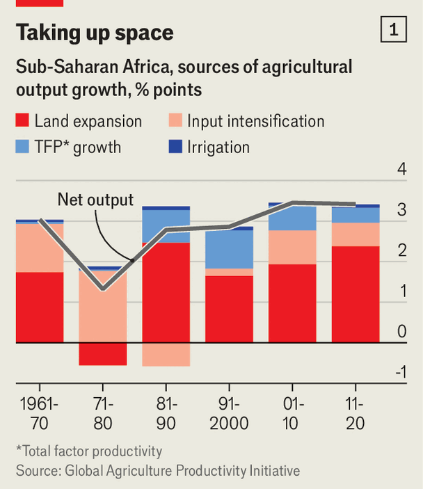

Can Africa take the Asian path to growth?
Stalling agricultural productivity makes it look unlikely
July 9th 2026

Economists in Africa speak enviously of the “green revolution” that transformed Asia from the 1960s onwards, when new varieties of rice flourished on small family farms. Population density pushed farmers to innovate and use more inputs, like fertiliser. As rural people grew richer, they demanded more manufactured goods. Factories filled with workers who were no longer needed in the fields.

Could sub-Saharan Africa be on the same path? In aggregate its farmers are growing more cereals, such as maize (corn) and rice, than ever: nearly five times as much as in the 1960s, when many countries achieved independence. But most of those gains came from cultivating more land, which cannot go on for ever (see chart 1). Africa, once sparsely populated, is getting crowded. The amount of arable land per person has been falling for decades, and now sits at roughly the global average.

That might not matter if farmers were also growing more crops per hectare. But recently gentle growth in agricultural productivity has given way to stagnation, perhaps even decline. Consider figures drawn from national statistics in Africa by the Food and Agriculture Organisation (FAO), a UN body. Cereal yields did not grow between 2020 and 2024, the latest data point (see chart 2). Nor did total factor productivity (TFP), a measure of how efficiently inputs of all kinds (such as labour and machinery) are turned into produce. Most African countries had lower agricultural TFP in 2023 than a decade before.
This seems to be more than a pandemic blip. In a paper published in 2024, Douglas Gollin of Tufts University in Massachusetts and his co-authors analysed data from surveys of 55,000 household farms in six African countries between 2008 and 2019. They estimated that, for smallholdings, yields and TFP were already falling by 3-4% a year then. They found steeper declines than the FAO did, perhaps because their sample did not include large farms, or because official statistics are sketchy.
Why is this happening? There are plenty of suspects, from conflict to tired soils. As El Niño returns, threatening drought in southern Africa, thoughts turn to climate change. By one estimate, agricultural TFP on the continent is a third lower than it could have been, had the climate remained as it was in 1961. Farmers complain that they no longer know when to sow.
Mr Gollin and his colleagues cannot rule out environmental factors, but in checking weather data they have yet to find a smoking gun. Instead, their tentative hypothesis is that workers are spending less time in their fields. Richer, better-educated farmers are especially likely to look for other work. Since factors like workers’ skills and working hours are imperfectly measured, this shows up as a fall in TFP.
If that proves true, the lessons from Asia would need to be revised. There, farmers responded to rising population density by working their land more intensively. But African farmers are cutting their hours most rapidly in congested places, especially near cities. That might be because African economies are relatively integrated into global markets, so city-dwellers’ growing demand for food is partly met by imports. If local food prices do not rise, farmers have less reason to intensify.
Another difference is that in Asia it was rising crop yields that helped kick-start economic change. In Africa agricultural productivity is stagnant, but farmers are still being pulled away from their land. That might be because money from sources such as oil revenues is driving urban growth and creating informal service jobs, suggests Mr Gollin.
The thorniest question concerns farm size. In Asia, small farms yielded more per hectare than large ones. Some studies find the same relationship in Africa; others explain it away as measurement error. In a paper in 2019 on Kenya, Milu Muyanga and Thomas Jayne, both of Michigan State University, find a U-shaped pattern: yields fall as farms get bigger, but in farms larger than five hectares they start to rise again, perhaps because it becomes easier to mechanise. Often even highly productive small farms are too tiny to be viable.
Admirers of the Asian model point to rising fertiliser use in the 2010s, suggesting that some farms are starting to intensify. Fast-growing trading firms are shuttling farm produce to towns; demand for meat, eggs and vegetables is met almost entirely by domestic supply. Since 2005 the market value of Africa’s agricultural produce has risen at a rate that matches South Asia, and outstrips every other region of the world. Crowded spots, from Africa’s Great Lakes to the Ethiopian highlands, could yet follow the path of Taiwan or Punjab.
Still, the relevance of the Asian example must be proved rather than assumed. “We’re in a different world than we were in [Asia] in the 1960s,” Mr Gollin says. Africa must find its own way. ■
Sign up to the Analysing Africa, a weekly newsletter that keeps you in the loop about the world’s youngest—and least understood—continent.